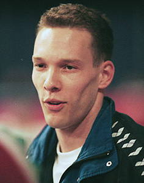

Szilveszter Csollany (HUN)
2000 Olympic R Champion
2002 World R Champion

Medal Total
Olympic Games: 1
Gold, 1 Silver
World Championships: 1 Gold, 5 Silver
European Championships: 1 Silver, 3 Bronze
World Cup: 2 Gold
Szilveszter was born on April 13, 1970 and died on January 24, 2022 from COVID.
Competition Results
1986
Jr. European Championships: 16th AA, 5th PH
1988
Intl. Friendship Tournament (Druzhba): 3rd Team, 1st R, 3rd PH
Jr. European Championships: 9th AA, 2nd R, 3rd PH
1989
Kosice International: 2nd AA
1990
Blume Memorial: 7th AA
Cottbus International: 16th AA
European Championships: 28th AA, 3rd R, 7th V
GER-SUI-HUN: 5th AA
Goodwill Games: 12th AA, 6th R
HUN-GBR Dual Meet: 3rd AA
1991
Blume Memorial: 10th AA
Dutch Open: 3rd AA, 1st R, 1st V
European Cup: 9th AA, 1st PH, 3rd R, 4th FX, 7th V
HUN-ISR-AUT-HOL: 2nd AA
International HUN Champs.: 4th AA
Sofia International: 7th AA
World Championships: 8th Team, 18th AA
World Stars: 11th AA
1992
European Championships: 12th AA
GER-HUN Dual Meet: 12th AA
HUN Championships: 2nd AA, 1st PH
HUN-GBR: 1st Team, 2nd AA
Milan Grand Prix: 4th AA
Olympic Games: 9th Team, 9th AA, 6th R, 7th V
World Championships: 2nd R
1993
French International: 2nd R, 6th PH
Ljubljana International: 10th AA, 1st R
1994
Birmingham Classic: 9th AA
DTB Cup: 7th R
European Championships: 3rd R
Swiss Cup: 1st R
World Championships (Brisbane): 7th R
1995
World Championships: 13th Team, 32nd AA
1996
Olympic Games: 2nd R
South Africa Cup: 1st AA
World Championships: 2nd R
1997
DTB Cup: 2nd R
Swiss Cup: 1st R
World Championships: 2nd R
1998
DTB Cup: 1st R
French International: 2nd R
Glasgow Grand Prix: 1st R
Goodwill Games: 5th R, 8th PH
Swiss Cup: 1st R
Voralberg Gym Days: 2nd AA
World Cup: 1st R
1999
American Cup: 19th AA (prelims)
DTB Cup: 1st R
Glasgow Grand Prix: 1st R
HUN International: 3rd AA
Samboo Cup: 1st R
Swiss Cup: 1st R
World Championships: 13th AA, 2nd R
2000
Cottbus International: 1st R
DTB Cup: 1st R
European Championships: 2nd R
Glasgow Grand Prix: 1st R
HUN International: 4th AA
Le Duel: 2nd R
Ljubljana International: 1st R
Olympics: 1st R
Pre-Olympics: 29th AA
World Cup: 1st R
Zenith Tournament: 1st R
2001
Cottbus International: 1st R
French International: 1st A
Goodwill Games: 1st R
World Championships: 16th Team, 2nd R
2002
Cottbus International: 2nd R
DTB Cup: 3rd R
European Championships: 3rd R
French International: 3rd R
World Championships: 1st R
2003
World Championships: 17th Team
This page was created on May 20,
2006 and was last updated on January 24, 2022.
© Gymn Forum